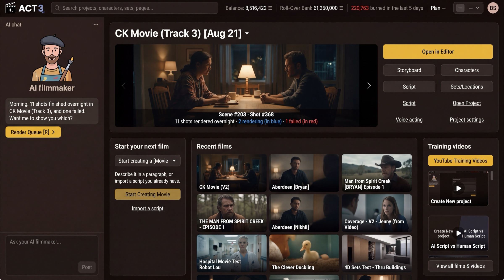

Step 1 of 7
Start a new project
Every new film starts on Home. Find the Start your next film panel. Click Start Creating Movie to open the New Project wizard.

Start Creating MovieWhat this page is
Home is the first screen after you sign in. Your current film sits at the top, your other films sit in Recent films, and the Start your next film panel is where a new project begins.
The menu above the button names what you are making: Start creating a [Movie ∨]. The button takes that word, so it reads Start Creating Movie for a movie. Pick the type first if your film is not a movie.
Your decision
Start Creating opens the wizard and lets you choose how the script arrives. That is the path for this guide.
Import a script, the link under the button, is a shortcut for people who already have a screenplay file. It is guide 2, Import a Script.
Why you go next to Starting Info
The wizard first asks for the basics: the film's name and its frame shape. Everything after that hangs on the project you create there.